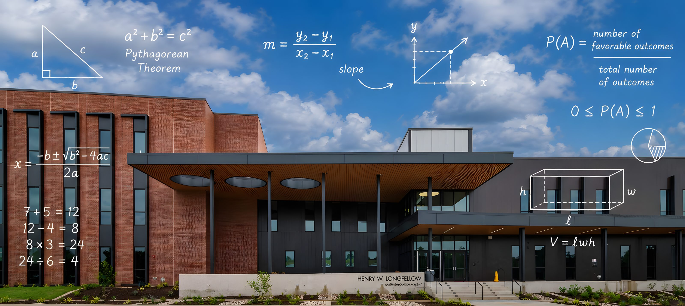
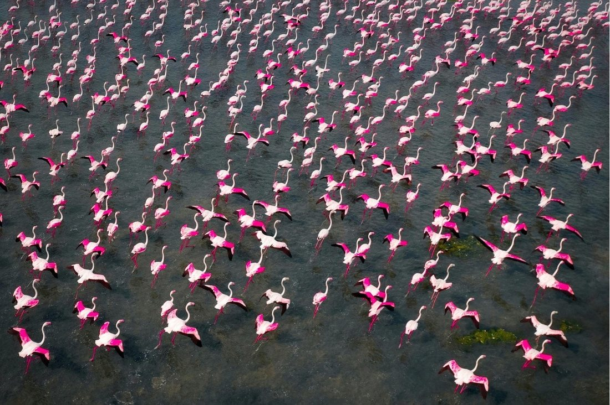
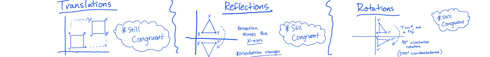
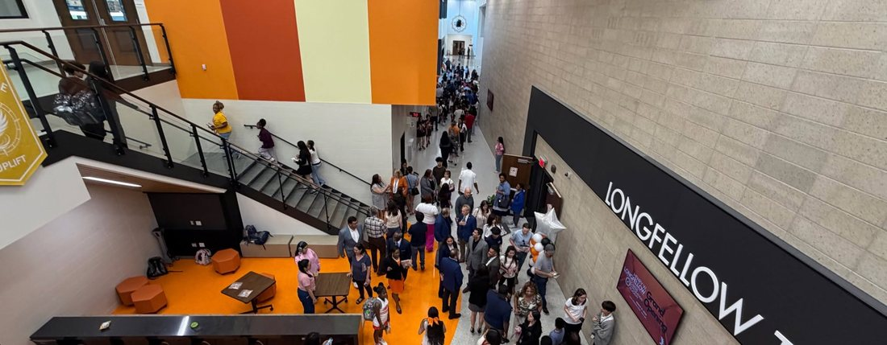
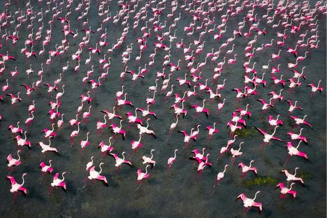
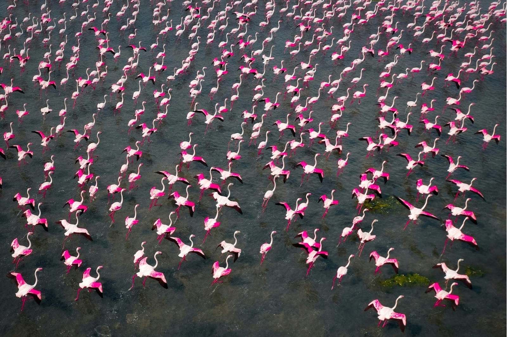
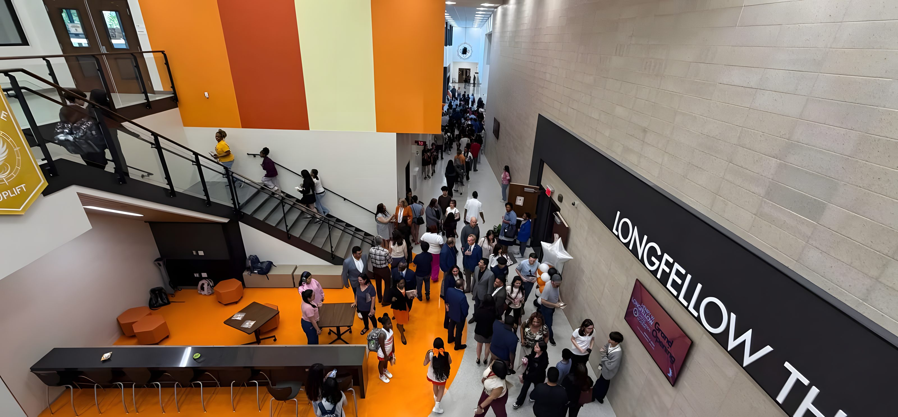

Advanced 7th Grade Mathematics
Where everything lives



Syllabus 26–27
Eight units

Check Your Understanding
Work the questions first. Then check.
A saved Topic Overview Guide with every Check Your Understanding question completed, turned in at the end of the quarter, raises that quarter's Standards Mastery Check score by 5% per guide. Only that quarter's guides count.
Transformations, Dilations & the Slope Bridge
“Mistakes are opportunities for reflection and improvement.” — Longfellow Graduate Mindsets
Topic 1C — Angle Relationships · 27 answers
The worked key posts the same way as 1A and 1B.
Topic 1D — Introduction to Slope · 27 answers
The worked key posts the same way as 1A and 1B.
Foundations of Linear Functions
One guide covers this unit. The key posts with the guide in Quarter 2.
Bivariate Data & Trend Lines
One guide covers this unit. The key posts with the guide in Quarter 2.
Real Numbers & Advanced Equations
Topic keys post with their guides in Quarter 3.
Pythagorean Theorem & 3-D Measurement
One guide covers this unit. The key posts with the guide in Quarter 3.
Data & Financial Literacy
One guide covers this unit. The key posts with the guide in Quarter 3.
State Assessment Review
Posts in Quarter 4.
Probability & Statistics
Keys post with the guides in Quarter 4.

Quarter 1
One module per Topic Overview Guide
Planned dates can shift slightly. Any change posts here and in the Family Guide. Out of fairness to families, the progression of assignments does not change.
Project information, submission, and best tips are housed in Google Classroom. The project rows below carry only the dates.
Rotations
Turning a figure about the origin without changing its size or shape.
The outlined image steps through 90° counterclockwise turns about the origin. One turn is (x, y) → (−y, x); each turn applies it again.
I can determine the algebraic representation of a clockwise and counterclockwise rotation about the origin when given a verbal description of the rotation. 8.10C
I can determine the algebraic representation of a rotation about the origin when given the graph of the image and pre-image. 8.10C
Topic Overview Guide 1A, Check Your Understanding 36–48. Answers
Deck 04.1A ROTATIONS — quiz-quiz-trade.

Student Resources
Calendar
How the week works
Quarter windows
| Quarter | Window | New learning |
|---|---|---|
| Quarter 1 | Aug 11 – Oct 7 | Unit 1 |
| Quarter 2 | Oct 13 – Dec 18 | Units 2–3 |
| Quarter 3 | Jan 6 – Mar 5 | Units 4–5, start of Unit 6 |
| Quarter 4 | Mar 8 – May 21 | State assessment review, then Unit 8 |
Assessment dates
| Assessment | When |
|---|---|
| Standards Mastery Check 1 | Tuesday, October 6 |
| Standards Mastery Check 2 | Tue–Wed, Dec 8–9 |
| Standards Mastery Check 3 | Wednesday, February 24 |
| State Assessment Snapshot Exam 1 | Week of March 22 |
| State Assessment Snapshot Exam 2 | Week of April 5 |
| Mathematics STAAR | Wednesday, April 21 |
Planned dates can shift slightly. Any change posts here and in the Family Guide. Out of fairness to families, the progression of assignments does not change.
Revision due dates are printed with each assignment and in the Family Guide, weeks 1–37.
Full-year calendar
Every graded assignment, week by week, all four quarters — to read through or plan ahead. Planned dates can shift slightly; the progression does not change.
Open the full-year calendar
Every quarter is 50 points
Three categories, weighted by the district. The bar below is drawn to scale.
Every assignment and grade is mapped out in the Family Guide.
Performance Tasks
Multi-problem tasks completed independently in class, 30–40 minutes. Scored 1–4: Beginning, Developing, Proficient, Exemplary. The score is writing and explanation based; a 4 is earned through thorough explanation.
Most graded work can be revised, objective by objective, with a reflection attached, within one week of return. A revised 4 becomes permanent after a Last Step slip — a short in-class demonstration that the objective now stands on its own. Only very few assessments (Standards Mastery Checks and Snapshot Exams) are not revised.
Graded on the process standards
The grade is based on Texas Education Agency's mathematical process standards: forming and communicating solid strategies, representing thinking in more than one way, explaining why a concept works, and helping others understand. Evidence comes from team tasks, class discussions, and shared artifacts, so there are many ways to earn full credit. Sharing ideas will always be rewarded for the benefits it brings to a solid class.
| Strand | Process standards | Looks like |
|---|---|---|
| Persist | 7.1B · 7.1C | Engages the task, tries a strategy, keeps thinking when stuck, restarts after a dead end. |
| Represent | 7.1D · 7.1E | Puts thinking down: diagrams, tables, symbols. Notes worth copying. |
| Connect | 7.1A · 7.1F | Links representations, notices patterns, relates the mathematics to real context or prior knowledge. |
| Lift | 7.1G | Advances someone else's understanding. |
Three grades per quarter, one every three weeks.
End most class periods. Never scored individually; they count as evidence toward the participation grade.
Never graded. A completed guide turned in at quarter's end raises that quarter's Standards Mastery Check score by 5% per guide. Only that quarter's guides count.
Two checks each quarter: mid-quarter and end-of-quarter.
Family Resources
Mr. Linam
Originally from Fort Smith, Arkansas, Mr. Linam is proud to join the Longfellow team. He holds a Bachelor of Arts in Political Science from Washington University in St. Louis and a Master of Science in Education from Johns Hopkins University. In 2024 Mr. Linam received the Middle School and District Teacher of the Year award at Tulsa Honor Academy. He most recently taught at Greiner Exploratory Arts Academy in Dallas. A trained grassroots organizer and Teach for America alum, he sees education as one of the best and most powerful ways to make a difference.
Outside the classroom Mr. Linam enjoys running outdoors, reading historical and educational literature, and spending time in the park with his partner and dog. Entering his fifth year in mathematics education, he is excited to help students establish serious academic goals and cheer on every success.
klinam@dallasisd.org — email is answered within one school day.